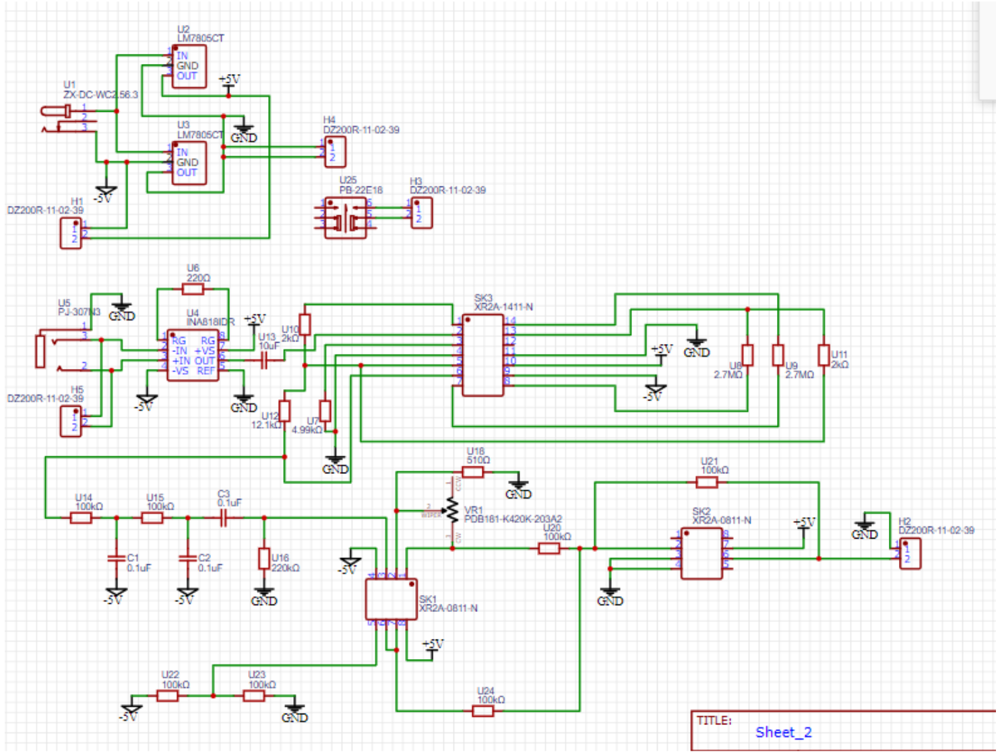
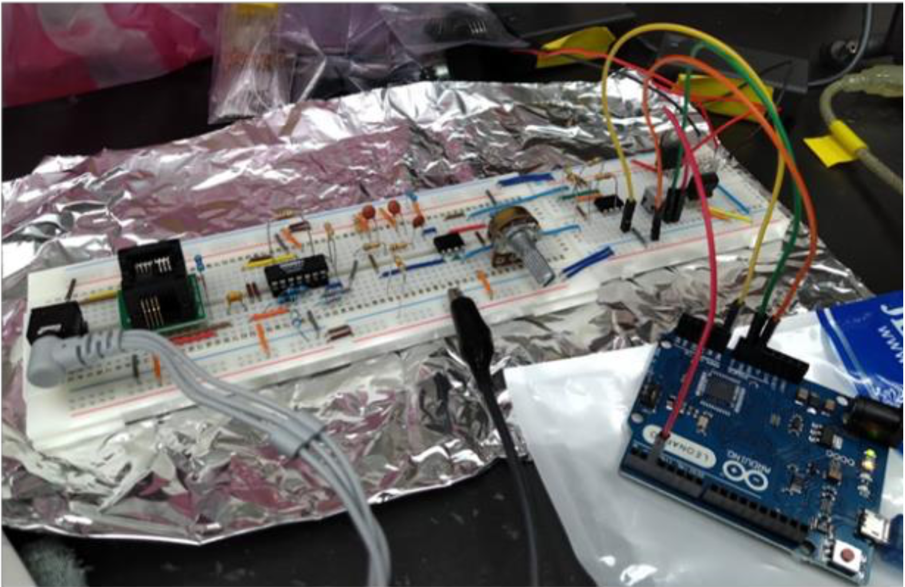
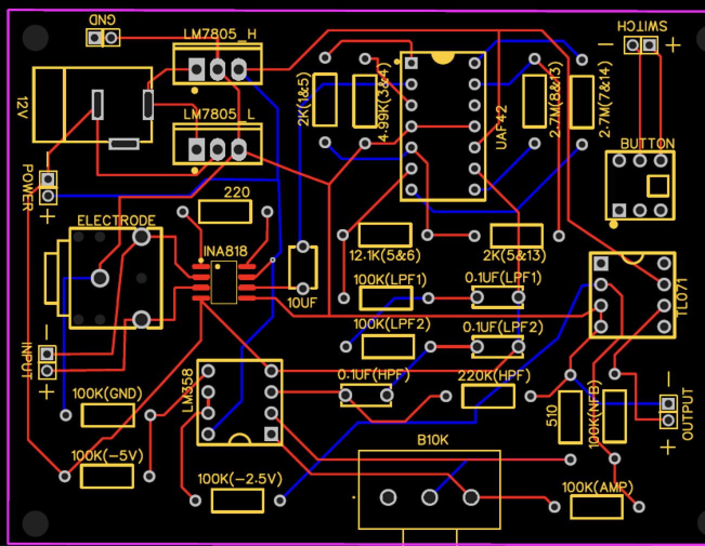

EOG Eye-Control Interface
electrooculography input • low-cost accessibility
OVERVIEW
- Motivation. Support older adults and users with mobility limitations by enabling computer/VR interaction using eye movement alone.
- Solution. An electrooculography (EOG) front‑end (INA818 instrumentation amplifier, 60 Hz notch, high/low‑pass filters, level shifting) feeding an Arduino Leonardo (ATmega32u4) that maps left/right eye movements to keyboard input for a VR or desktop interface.
- Outcome. Breadboard used for the demo; initial PCB (Rev A) fabricated and evaluated; stable left/right detection; controls camera yaw in a VR scene.
HOW IT WORKS

- Electrodes. Two measurement electrodes at the temples plus a reference electrode capture corneo‑retinal potential changes during saccades.
- Analog front‑end. INA818 gain stage → UAF42 60 Hz notch → high/low‑pass conditioning → offset to ~2.5 V → LM358 second‑stage gain → TL071 adder to center the signal at mid‑rail (0–5 V output).
- Sampling & logic. Arduino ADC samples the channel; dual thresholds detect left/right looks. First detection presses a or d; a second detection releases the key to stop rotation.
- Interface. Unity scene (or desktop app) responds to keyboard events for camera yaw; a hardware toggle switch enables/disables input safely.
- IC legend: SK1 = LM358; SK2 = TL071; SK3 = UAF42.
PROTOTYPE (BREADBOARD)

- Resolved DC drift by adding a bleed resistor after AC‑coupling to provide an input bias path; removed an over‑aggressive low‑pass that attenuated the band of interest.
- Reduced common‑mode/EMI by placing a grounded foil plane under the circuit and improving cable routing.
- Verified clean left/right waveforms after conditioning; centered output around 2.5 V for 0–5 V ADC range.
PCB DESIGN

- Revision A findings. Needed to move the TRS jack closer to the edge; increase trace widths; and add ground copper pour/shielding.
- Assembly issue encountered. We observed ~20–30 MΩ resistance causing leakage near the INA818 pads. We plan to reflow with a stencil or switch to a DIP part (e.g., INA118/INA128).
- Demo choice. Because of the leakage risk and timeline, we used the breadboard build for the demo.
DEMO
REFERENCES
References (20)
- Krebs, C., Weinberg, J., & Akesson, E. (2016). 最新彩色圖解神經科學（楊韻如、李琪宏 譯）。合記。（原著出版於 2012 年）。
- 內政部戶政司（2018/04/10）。老年人口突破 14% 內政部：臺灣正式邁入高齡社會。https://www.moi.gov.tw/News_Content.aspx?n=2&s=11663
- 阿簡（2011/02/08）。眼動儀 DIY‑webcam 的應用。阿簡生物筆記。http://a-chien.blogspot.com/2011/02/diy-webcam.html?m=1
- 瓶子裡的小狐狸（2015/10/27）。Unity3D 製作 Cardboard 全景 VR 應用。https://szeching.com/how-to-make-cardboard-vr-app-with-unity3d/
- 衛生福利部統計處（2021/12/02）。國際身心障礙者日衛生福利統計通報。https://www.mohw.gov.tw/dl-72892-c0bae2d9-645f-46ef-890b-330d32d4102b.html
- 3M. (2023). 3M™ 心電圖電極貼片 2228。https://www.3m.com.tw/3M/zh_TW/p/d/v000183146/
- AHMSVILLE. (2020). 3D Printed Google Cardboard VR Headset. Cults. https://cults3d.com/en/3d-model/gadget/3d-printed-google-cardboard-vr-headset
- Apple. (2023). Apple Vision Pro. https://www.apple.com/apple-vision-pro/
- Barlow, D. H., Durand, V. M., & Hofmann, S. G. (2018). Abnormal Psychology: An Integrative Approach (8th). Cengage Learning.
- Merletti, R., & Cerone, G. L. (2020). Surface EMG detection, conditioning and pre‑processing: Best practices. Journal of Electromyography and Kinesiology, 54, 102440. https://doi.org/10.1016/j.jelekin.2020.102440
- Mishra, S., Kim, Y. S., Intarasirisawat, J., Kwon, Y. T., Lee, Y., Mahmood, M., Lim, H. R., Herbert, R., Yu, K. J., Ang, C. S., & Yeo, W. H. (2020). Soft, wireless periocular wearable electronics for real‑time detection of eye vergence in a virtual reality toward mobile eye therapies. Science Advances, 6(11), eaay1729. https://doi.org/10.1126/sciadv.aay1729
- Molina, J. (1994). Design a 60 Hz Notch Filter With the UAF42. Burr‑Brown Application Bulletin. https://www.ti.com/lit/an/sbfa012/sbfa012.pdf
- Papaioannou, T., Voinescu, A., Petrini, K., & Stanton Fraser, D. (2022). Efficacy and Moderators of Virtual Reality for Cognitive Training in People with Dementia and Mild Cognitive Impairment: A Systematic Review and Meta‑Analysis. Journal of Alzheimer’s Disease, 88(4), 1341–1370. https://doi.org/10.3233/JAD-210672
- Park, S., Ha, J., Park, J., Lee, K., & Im, C. H. (2022). Brain‑Controlled, AR‑based Home Automation System using SSVEP‑based Brain‑Computer Interface and EOG‑based Eye Tracker: A Feasibility Study for the Elderly End User. IEEE Transactions on Neural Systems and Rehabilitation Engineering. https://doi.org/10.1109/TNSRE.2022.3228124
- Programming Electronics Academy. (2021, November 6). Control your keyboard with Arduino! Automate simple tasks! [Video]. YouTube. https://www.youtube.com/watch?v=_vLLhU3mX1M
- Pu, X., Guo, H., Chen, J., Wang, X., Xi, Y., Hu, C., & Wang, Z. L. (2017). Eye motion triggered self‑powered mechanosensational communication system using triboelectric nanogenerator. Science Advances, 3(7), e1700694. https://doi.org/10.1126/sciadv.1700694
- Pygame contributors. (2023). Pygame. https://www.pygame.org/news
- Qiu, R., Gu, Y., Xie, C., Wang, Y., Sheng, Y., Zhu, J., Yue, Y., & Cao, J. (2022). Virtual reality‑based targeted cognitive training program for Chinese older adults: A feasibility study. Geriatric Nursing, 47, 35–41.
- Texas Instruments. (2010). UAF42 Universal Active Filter datasheet.
- Texas Instruments. (2023). INA818 Precision Instrumentation Amplifier datasheet.